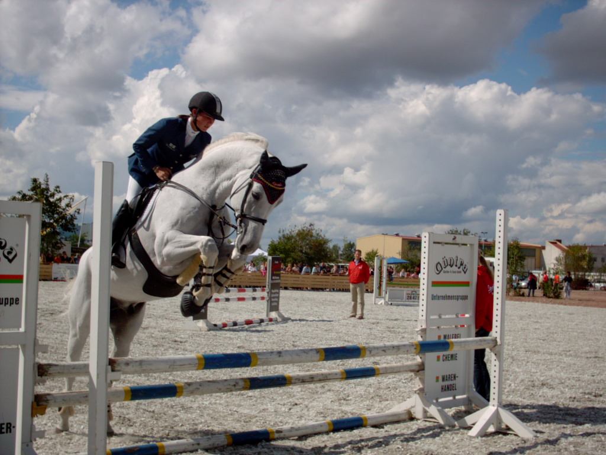
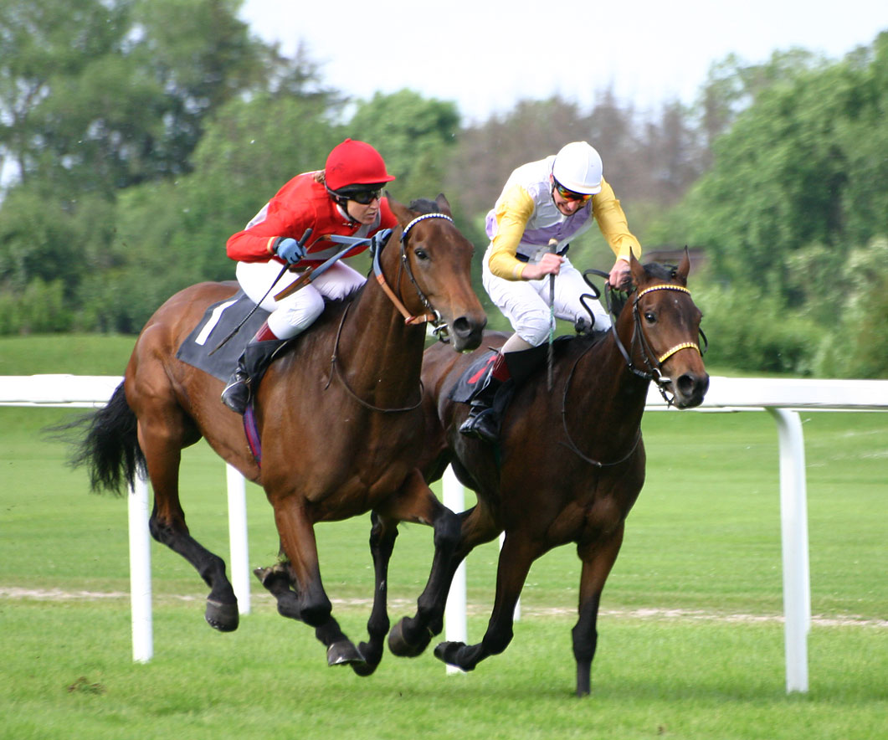

For other uses, see Sport (disambiguation). Sport in childhood. Association football, shown above, is a team sport which also provides opportunities to nurture physical fitness and social interaction skills. The 2005 London Marathon: running races, in their various specialties, represent the oldest and most traditional form of sport. Sport is a form of physical activity or game.[1] Often competitive and organized, sports use, maintain, or improve physical ability and skills. They also provide enjoyment to participants and, in some cases, entertainment to spectators.[2] Many sports exist, with different participant numbers, some are done by a single person with others being done by hundreds. Most sports take place either in teams or competing as individuals. Some sports allow a "tie" or "draw", in which there is no single winner; others provide tie-breaking methods to ensure one winner. A number of contests may be arranged in a tournament format, producing a champion. Many sports leagues make an annual champion by arranging games in a regular sports season, followed in some cases by playoffs. Sport is generally recognised as system of activities based in physical athleticism or physical dexterity, with major competitions admitting only sports meeting this definition.[3] Some organisations, such as the Council of Europe, preclude activities without any physical element from classification as sports.[2] However, a number of competitive, but non-physical, activities claim recognition as mind sports. The International Olympic Committee who oversee the Olympic Games recognises both chess and bridge as sports. SportAccord, the international sports federation association, recognises five non-physical sports: bridge, chess, draughts, Go and xiangqi.[4][5] However, they limit the number of mind games which can be admitted as sports.[1] Sport is usually governed by a set of rules or customs, which serve to ensure fair competition. Winning can be determined by physical events such as scoring goals or crossing a line first. It can also be determined by judges who are scoring elements of the sporting performance, including objective or subjective measures such as technical performance or artistic impression. Records of performance are often kept, and for popular sports, this information may be widely announced or reported in sport news. Sport is also a major source of entertainment for non-participants, with spectator sport drawing large crowds to sport venues, and reaching wider audiences through broadcasting. Sport betting is in some cases severely regulated, and in others integral to the sport. According to A.T. Kearney, a consultancy, the global sporting industry is worth up to $620 billion as of 2013.[6] The world's most accessible and practised sport is running, while association football is the most popular spectator sport.[7] Meaning and usage Etymology The word "sport" comes from the Old French desport meaning "leisure", with the oldest definition in English from around 1300 being "anything humans find amusing or entertaining".[8] Other meanings include gambling and events staged for the purpose of gambling; hunting; and games and diversions, including ones that require exercise.[9] Roget's defines the noun sport as an "activity engaged in for relaxation and amusement" with synonyms including diversion and recreation.[10] Nomenclature The singular term "sport" is used in most English dialects to describe the overall concept (e.g. "children taking part in sport"), with "sports" used to describe multiple activities (e.g. "football and rugby are the most popular sports in England"). American English uses "sports" for both terms.[citation needed] Definition See also: Game § Definitions The International Olympic Committee recognises some board games as sports, including chess. Show jumping, an equestrian sport The precise definition of what differentiates a sport from other leisure activities varies between sources. The closest to an international agreement on a definition is provided by the Global Association of International Sports Federations (GAISF), which is the association for all the largest international sports federations (including association football, athletics, cycling, tennis, equestrian sports, and more), and is therefore the de facto representative of international sport. GAISF uses the following criteria, determining that a sport should:[1] have an element of competition be in no way harmful to any living creature not rely on equipment provided by a single supplier (excluding proprietary games such as arena football) not rely on any "luck" element specifically designed into the sport. They also recognise that sport can be primarily physical (such as rugby or athletics), primarily mind (such as chess or Go), predominantly motorised (such as Formula 1 or powerboating), primarily co-ordination (such as snooker and other cue sports), or primarily animal-supported (such as equestrian sport).[1] The inclusion of mind sports within sport definitions has not been universally accepted, leading to legal challenges from governing bodies in regards to being denied funding available to sports.[11] Whilst GAISF recognises a small number of mind sports, it is not open to admitting any further mind sports. There has been an increase in the application of the term "sport" to a wider set of non-physical challenges such as video games, also called esports (from "electronic sports"), especially due to the large scale of participation and organised competition, but these are not widely recognised by mainstream sports organisations. According to Council of Europe, European Sports Charter, article 2.i, "'Sport' means all forms of physical activity which, through casual or organised participation, aim at expressing or improving physical fitness and mental well-being, forming social relationships or obtaining results in competition at all levels."[12] Competition Horse racing There are opposing views on the necessity of competition as a defining element of a sport, with almost all professional sports involving competition, and governing bodies requiring competition as a prerequisite of recognition by the International Olympic Committee (IOC) or GAISF.[1] Other bodies advocate widening the definition of sport to include all physical activity. For instance, the Council of Europe include all forms of physical exercise, including those competed just for fun.[citation needed] In order to widen participation, and reduce the impact of losing on less able participants, there has been an introduction of non-competitive physical activity to traditionally competitive events such as school sports days, although moves like this are often controversial.[13][14] In competitive events, participants are graded or classified based on their "result" and often divided into groups of comparable performance, (e.g. gender, weight and age). The measurement of the result may be objective or subjective, and corrected with "handicaps" or penalties. In a race, for example, the time to complete the course is an objective measurement. In gymnastics or diving the result is decided by a panel of judges, and therefore subjective. There are many shades of judging between boxing and mixed martial arts, where victory is assigned by judges if neither competitor has lost at the end of the match time.[citation needed] History
 